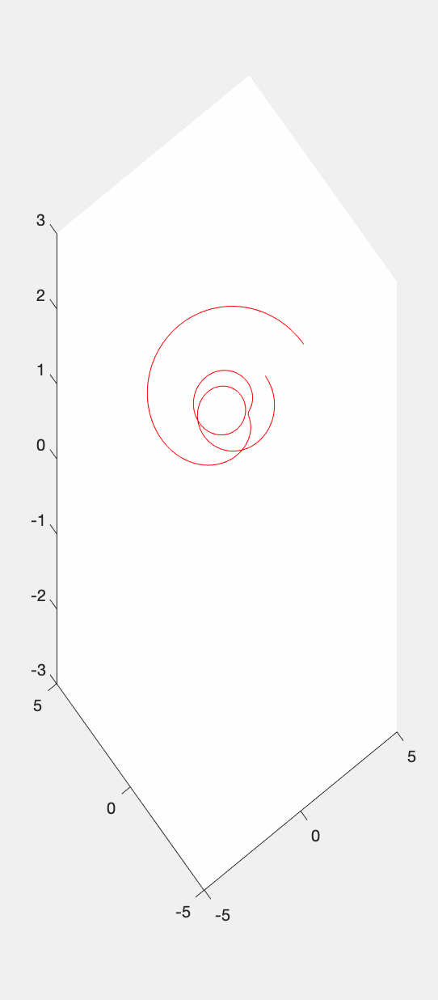
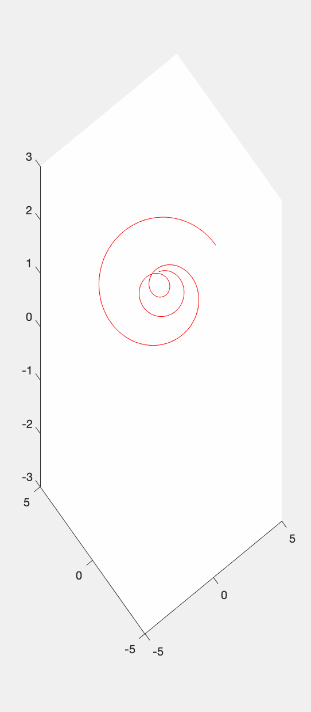
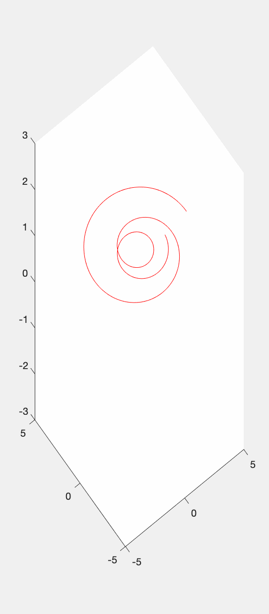
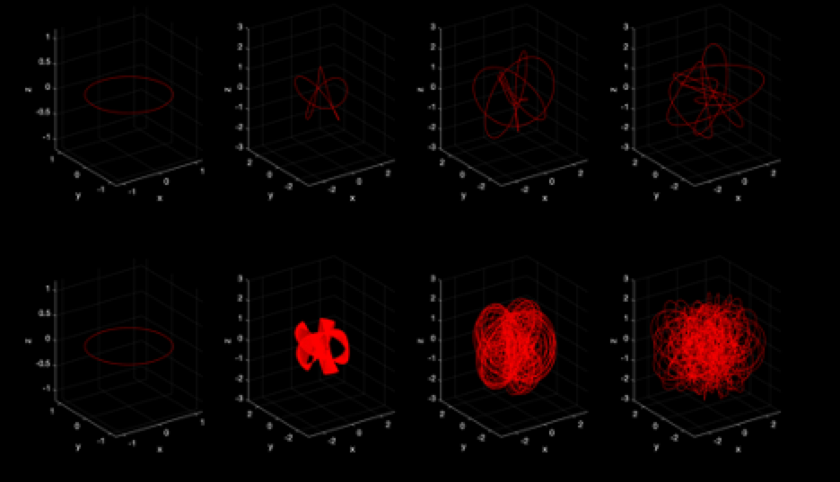

This is based on the expected mirror theory of the decision-making concept using the resonance principle in analysis of Derek Chauvin’s mind in processing George Floyd's death :
What's really happen in our mind?
1. Introduction
There are many conceptual resonances in our decision, and these conceptual resonances are an important principle under the expected mirror theory. We have seen thathas found the resonance amplification and vibration protein in the ion channels on the neuronal dendrites of rat brains 1. This result from the physiological level of brain neurons provides a physiological basis for our expected mirror theory. At the same time, VEN has carried out a lot of research, proving that VEN is the basis of empathic neurons（2,3）.
At present, there is still no clear definition and description of the working principle of VEN. In addition, there is no clear explanation for how the various resonances and shocks of the brain in the rat experiment relate to the formation of our concept. Through the principle of the resonance of the expected mirror theory, we can penetrate some conclusions of the above physiological basis, and analyze our daily decision-making process through cognition-frequency-oscillation-resonance.
In the George Floyd protest incident, this matter was very obvious. We explain this for this.
Resonance:

None-Whole Resonance:

None-Resonance:

Resonance lOOP in :

2. The main point of view of the principle of conceptual resonance of expected mirror theory
2.1 The chaotic decision in the chaotic brain prevents people from taking the right actions
2.2 Cognitive pattern formed by language resonance, people add new vocabulary or concepts, the past model is often difficult to ignore.
2.3 The media storm caused by low-cost information is making more people’s brains in a normal state of transition and chaos.
2.4 Phase extraction, adjustment and locking are our decision-making process.
VEN is actually to establish a coordinate origin of the other party in his own mind. That is to establish a frequency in the other party’s mind.
by kang xiaonen. 2020.6.1. if you are interested in this research and want to see more, please do not hesitate to let me know: xiaowenkang@hks.harvard.edu (this email might not be used after July 2020.) another email alternative: kangxiaowen@gmail.com
Reference
1.Matsumoto-Makidono, Y., Nakayama, H., Yamasaki, M., Miyazaki, T., Kobayashi, K., Watanabe, M., Kano, M., Sakimura, K. & Hashimoto, K. Ionic Basis for Membrane Potential Resonance in Neurons of the Inferior Olive. Cell Reports 16, 994–1004 (2016).
2.Wong, E., Mölter, J., Anggono, V., Degnan, S.M. & Degnan, B.M. Co-expression of synaptic genes in the sponge Amphimedon queenslandica uncovers ancient neural submodules. Scientific Reports 9, 15781 (2019).
3.Raghanti, M.A., Spurlock, L.B., Treichler, F.R., Weigel, S.E., Stimmelmayr, R., Butti, C., Thewissen, J.G.M.H. & Hof, P.R. An analysis of von Economo neurons in the cerebral cortex of cetaceans, artiodactyls, and perissodactyls. Brain Structure & Function 220, 2303–2314 (2015).